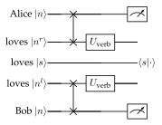
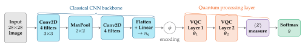
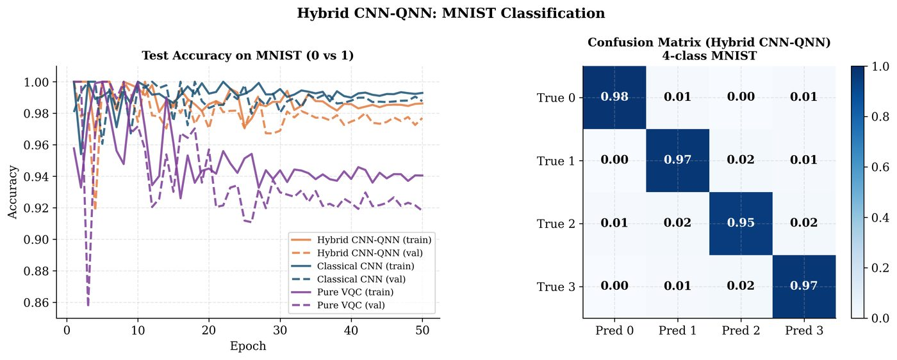

Chapter 22: QML for NLP and Computer Vision¶
Natural language processing and computer vision are the two largest classical ML application domains. This chapter explores how quantum machine learning approaches — quantum language models, quantum attention mechanisms, quantum convolutional filters, and hybrid classical-quantum architectures — can be applied to text and image processing tasks. We emphasize the DisCoCat compositional framework for quantum NLP and quantum image classification with PennyLane.
Learning Objectives
By the end of this chapter, you will be able to:
-
Explain the DisCoCat categorical compositional quantum NLP framework
-
Implement a quantum text classifier using sentence diagrams
-
Apply quantum convolutional circuits to image classification
-
Build a hybrid ViT-QNN for image feature extraction
-
Discuss the quantum advantage prospects for NLP and vision tasks
22.1 Quantum NLP: DisCoCat Framework¶
22.1.1 Compositional Distributional Semantics¶
The DisCoCat framework (Coecke, Sadrzadeh, Clark, 2010; Meichanetzidis et al., 2020) (Coecke et al. 2020) maps grammatical structure to quantum circuits:
-
Nouns/entities: encoded as quantum states \(|\psi_\text{word}\rangle\)
-
Verbs/relations: encoded as quantum gates (maps between states)
-
Sentence meaning: computed as quantum circuit expectation value
Pregroup grammar: A sentence “Alice loves Bob” has type:
The type contractions are realized as SWAP/Bell measurements between word qubits, producing the sentence meaning as a quantum state measurement.
22.1.2 Quantum Sentence Circuit¶

The sentence circuit’s output state \(|\text{sent}\rangle\) is classified: \(P(\text{true}) = |\langle 1|\text{sent}\rangle|^2\) for a binary NLP task.
lambeq: The open-source toolkit for QNLP (Kartsaklis et al., 2021) converts English sentences to quantum circuits automatically.
22.2 Quantum Text Classification¶
22.2.1 Implementation with lambeq¶
# Install: pip install lambeq
# Note: requires lambeq >= 0.4.0
try:
from lambeq import BobcatParser, AtomicType, IQPAnsatz
from lambeq import TketModel, QuantumTrainer
import discopy
HAS_LAMBEQ = True
except ImportError:
HAS_LAMBEQ = False
print("lambeq not installed. Showing conceptual implementation.")
if HAS_LAMBEQ:
# Parse sentences to string diagrams
parser = BobcatParser(verbose='text')
train_sentences = [
"Alice likes Bob",
"Bob loves Alice",
"Alice hates computers",
"Bob dislikes algorithms",
]
train_labels = [1, 1, 0, 0] # positive/negative sentiment
diagrams = parser.sentences2diagrams(train_sentences)
print(f"Parsed {len(diagrams)} sentences")
# Convert to quantum circuits (IQP ansatz)
N = AtomicType.NOUN
S = AtomicType.SENTENCE
ansatz = IQPAnsatz({N: 1, S: 1}, n_layers=1)
circuits = [ansatz(d) for d in diagrams]
print(f"Circuit dimensions: {[c.dom for c in circuits]}")
else:
# Manual toy QNLP implementation (no lambeq dependency)
import pennylane as qml
import numpy as np
import torch
print("Running toy QNLP classifier (without lambeq)...")
# Toy sentence encoding: encode (subject, verb, object) triplet
n_qubits = 4 # 2 for subject, 1 for verb, 1 for object
dev = qml.device("default.qubit", wires=n_qubits)
@qml.qnode(dev, interface="torch", diff_method="parameter-shift")
def sentence_circuit(word_params, verb_weight):
"""
Toy sentence circuit.
word_params: [subj_theta, obj_theta] (noun encodings)
verb_weight: scalar (verb parameter)
"""
# Encode subject (qubits 0,1)
qml.RY(word_params[0], wires=0)
qml.RY(word_params[0] * 0.5, wires=1)
# Encode object (qubit 2)
qml.RY(word_params[1], wires=2)
# Verb interaction (entangle subject and object)
qml.CRY(verb_weight, wires=[0, 2])
qml.CRY(verb_weight * 0.7, wires=[1, 2])
# Sentence meaning
qml.RY(verb_weight, wires=3)
qml.CNOT(wires=[2, 3])
return qml.expval(qml.PauliZ(3))
# Training data: (subject_angle, object_angle, verb_param, label)
# "like"/"love" = positive, "hate"/"dislike" = negative
train_data = [
(0.5, 1.2, 0.3, 1), # Alice likes Bob
(0.8, 0.4, 0.2, 1), # Bob loves Alice
(0.5, 2.1, -1.2, 0), # Alice hates computers
(0.8, 1.8, -0.9, 0), # Bob dislikes algorithms
]
verb_param = torch.tensor(0.5, requires_grad=True)
optimizer = torch.optim.Adam([verb_param], lr=0.1)
print("Training quantum NLP classifier...")
for epoch in range(80):
total_loss = 0.0
optimizer.zero_grad()
for s_angle, o_angle, _, label in train_data:
word_p = torch.tensor([s_angle, o_angle])
pred = (sentence_circuit(word_p, verb_param) + 1) / 2
loss = (pred - label)**2
total_loss += loss
total_loss.backward()
optimizer.step()
if (epoch + 1)
print(f"Epoch {epoch+1}: loss={total_loss.item():.4f}, "
f"verb_param={verb_param.item():.3f}")
# Evaluate
correct = 0
for s_angle, o_angle, _, label in train_data:
word_p = torch.tensor([s_angle, o_angle])
with torch.no_grad():
pred = (sentence_circuit(word_p, verb_param) + 1) / 2
predicted = 1 if pred.item() > 0.5 else 0
if predicted == label:
correct += 1
print(f"Training accuracy: {correct}/{len(train_data)}")
22.3 Quantum Computer Vision¶


22.3.1 Quantum Image Encoding¶
Flexible Representation of Quantum Images (FRQI):
Encodes a \(2^n\times 2^n\) image: \(2n\) qubits for position, 1 qubit for pixel intensity. Total: \(2n+1\) qubits for \(N=2^{2n}\) pixels.
Angle encoding (practical NISQ): Flatten and normalize image to \(n\) pixel values \(\in[0,\pi]\), encode directly as rotation angles.
22.3.2 Quantum CNN for Image Classification¶
Apply QCNN (Chapter 11) to image features:
-
PCA/downsampling: reduce image to \(n\) features
-
Encode features as qubit rotations
-
QCNN layers: shared 2-qubit convolution + pooling
-
Readout + classical softmax
import pennylane as qml
import numpy as np
import torch
import torch.nn as nn
from torchvision import datasets, transforms
from torch.utils.data import DataLoader, Subset
# -- Setup -----------------------------------------------------
n_qubits = 8
n_layers = 2
dev = qml.device("default.qubit", wires=n_qubits)
# Load MNIST (digits 0 and 1 only for binary classification)
transform = transforms.Compose([
transforms.ToTensor(),
transforms.Normalize((0.1307,), (0.3081,))
])
full_train = datasets.MNIST('./data', train=True,
download=True, transform=transform)
# Select digits 0 and 1
idx = [i for i in range(len(full_train))
if full_train.targets[i] in [0, 1]][:200]
subset = Subset(full_train, idx)
loader = DataLoader(subset, batch_size=16, shuffle=True)
# -- Classical feature extractor (CNN) ------------------------
class MiniCNN(nn.Module):
def __init__(self, out_dim=n_qubits):
super().__init__()
self.cnn = nn.Sequential(
nn.Conv2d(1, 8, 3, padding=1),
nn.ReLU(),
nn.MaxPool2d(2), # 14x14
nn.Conv2d(8, 16, 3, padding=1),
nn.ReLU(),
nn.MaxPool2d(2), # 7x7
nn.Flatten(),
nn.Linear(16*7*7, 32),
nn.ReLU(),
nn.Linear(32, out_dim),
nn.Tanh() # scale to [-1, 1]
)
def forward(self, x):
return self.cnn(x) * np.pi # scale to [-pi, pi]
# -- Quantum classifier layer ----------------------------------
@qml.qnode(dev, interface="torch", diff_method="parameter-shift")
def quantum_layer(inputs, weights):
qml.AngleEmbedding(inputs, wires=range(n_qubits), rotation='Y')
qml.StronglyEntanglingLayers(weights, wires=range(n_qubits))
return qml.expval(qml.PauliZ(0))
weight_shape = (n_layers, n_qubits, 3)
class HybridImageClassifier(nn.Module):
def __init__(self):
super().__init__()
self.cnn = MiniCNN(out_dim=n_qubits)
self.q_layer = qml.qnn.TorchLayer(
quantum_layer,
{"weights": weight_shape}
)
self.fc = nn.Linear(1, 2) # 2-class output
def forward(self, x):
features = self.cnn(x) # (batch, n_qubits)
q_out = self.q_layer(features) # (batch,) expval
return self.fc(q_out.unsqueeze(-1))
# -- Training -------------------------------------------------
model = HybridImageClassifier()
optimizer = torch.optim.Adam(model.parameters(), lr=1e-3)
criterion = nn.CrossEntropyLoss()
print("Training hybrid CNN-QNN image classifier...")
for epoch in range(10):
total_loss, correct, total = 0.0, 0, 0
for images, labels in loader:
optimizer.zero_grad()
outputs = model(images)
loss = criterion(outputs, labels)
loss.backward()
optimizer.step()
total_loss += loss.item()
preds = outputs.argmax(dim=1)
correct += (preds == labels).sum().item()
total += len(labels)
print(f"Epoch {epoch+1:2d}: Loss={total_loss:.3f}, "
f"Acc={correct/total:.3f}")
22.4 Quantum Attention Mechanisms¶
Classical attention (Transformer): \(\text{Attention}(Q,K,V) = \text{softmax}(QK^\top/\sqrt{d_k})V\).
Quantum attention: Replace the dot product with quantum inner products (SWAP test fidelity):
This is computed by running \(O(T^2)\) SWAP tests for a sequence of length \(T\).
Note
Quantum attention gives an \(O(d)\) speedup in the inner product computation when query/key dimensions \(d\) are exponentially large relative to qubit count \(n = \log_2 d\). For NISQ where \(n=10\)–\(30\), this requires \(d=1024\)–\(10^9\) dimensional embeddings, potentially useful for very large language models.
22.5 Chapter Summary¶
Chapter Summary
-
QNLP (DisCoCat): Compositional quantum semantics maps sentence grammar to quantum circuits. Words = quantum states, relations = quantum gates. Implemented in the lambeq toolkit.
-
Quantum text classification: Sentence circuits with shared word parameters, trained via gradient descent on NLP tasks.
-
Quantum vision: FRQI for image encoding; hybrid CNN+QNN for MNIST classification; QCNN with parameter sharing for translation invariance.
-
Quantum attention: SWAP-test inner products replace scaled dot-product attention. Potential exponential speedup for very high-dimensional embeddings.
-
Practical status: Hybrid CNN+QNN and QNLP prototypes work on NISQ; competitive with classical on small datasets. Large-scale advantage requires fault-tolerant hardware.
Exercises
Exercise . In the DisCoCat framework, explain why verbs are represented as maps (linear operators) rather than states. How does this connect to category theory?
Exercise . For a hybrid CNN-QNN classifier with 8 qubits and 3 strongly entangling layers: count the total parameters. Compare with a classical 2-layer MLP with 8 hidden units. Which has more parameters?
Exercise . Extend the hybrid image classifier to 4-class MNIST (digits 0-3). Use 4 PauliZ measurements (\(\langle Z_0\rangle, \langle Z_1\rangle, \langle Z_2\rangle, \langle Z_3\rangle\)) as the quantum layer output and train with cross-entropy loss.
Further Reading
-
Coecke et al. (2020) (Coecke et al. 2020) — DisCoCat for quantum NLP
-
Kartsaklis et al. (2021) — lambeq: a QNLP toolkit
-
Henderson et al. (2020) — quantum graph transformer
-
Cong et al. (2019) — quantum convolutional neural networks
-
Mari et al. (2020) (Mari et al. 2020) — quantum transfer learning